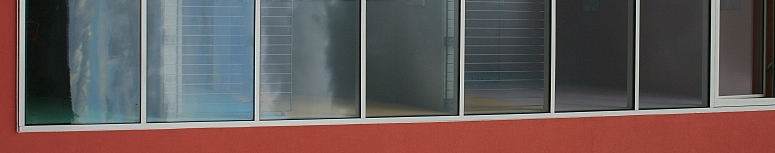

|
|
|

|
| |
Schule Schafisheim Schul- und Hausordnung

vom August 2006
Um das Leben in unserer Schulgemeinschaft angenehm zu gestalten, erlassen Schulpflege,
Schulleitung und Lehrerschaft die vorliegende Schul- und Hausordnung. Sie stützt sich auf
das Aargauische Schulgesetz vom 17. März 1981 und die Verordnung über die Volksschule
vom 29. April 1985 (Abänderungen bis August 2006 wurden berücksichtigt).
Mit “Schüler” werden im folgenden Text sowohl Schülerinnen als auch Schüler bezeichnet.
|
| |
- Schulordnung
- Versicherungen / Zahnkontrolle / Schularzt
Unfälle, Sach- und Haftpflichtschäden sind durch die Eltern zu versichern.
Ausgenommen sind schwere Unfälle, bei denen mit Spätfolgen oder einer Invalidität
zu rechnen ist. Diese Unfälle sind umgehend der Lehrkraft zu melden.
Anfangs Schuljahr erhalten die Schüler einen Gutschein für eine zahnärztliche Kontrolluntersuchung.
Die Kosten für diese Untersuchung übernimmt die Gemeinde.
Im Kindergarten und in der 5. Klasse findet eine Untersuchung durch den Schularzt
statt.
- Absenzen, Urlaub
Es gilt der aktuelle Erlass über die Absenzen- und Urlaubsregelung der Schulgemeinden
Schafisheim/Hunzenschwil /Rupperswil.
- Dispensationen
Langdauernde oder gänzliche Befreiung vom obligatorischen Turnunterricht ist nur
auf Grund eines Arztzeugnisses möglich.
Schüler, deren Eltern als Angehörige einer Religionsgemeinschaft besondere Feiertage
achten, werden auf Gesuch der Eltern durch die Schulpflege vom Unterricht
dispensiert. Der versäumte Unterrichtsstoff und die Hausaufgaben sind nachzuholen.
- Freiwillige Wiederholung einer Klasse
Die freiwillige Wiederholung einer Klasse ist auf begründetes Gesuch der Eltern mit
Bewilligung der Schulpflege möglich. Als Gründe gelten längere Krankheit und unregelmässiger
Bildungsgang. (§47 V Volksschule)
- Rechte der Schüler und Eltern
Der Schüler hat das Recht, von seinen Lehrkräften und der Schulleitung in schulischen
Sachfragen sowie in persönlichen Angelegenheiten und Problemen angehört
zu werden.
Die Eltern haben das Recht, Schulprobleme ihrer Kinder mit den betreffenden Lehrpersonen
zu besprechen. Meinungsverschiedenheiten zwischen Eltern und Lehrkräften
sollen womöglich durch direkte Gespräche behoben werden. Kommt keine Einigung
zustande, können sie an die Schulleitung oder, wenn nötig, an die Schulpflege
gelangen.
- Pflichten der Schüler und Eltern
Die Schüler sind zu regelmässigem und pünktlichem Schulbesuch verpflichtet. Der
Schüler hat seine Arbeiten sorgfältig und gewissenhaft auszuführen.
(§23 V Volksschule)
Die Schüler haben die Anweisungen der Lehrkräfte, der Schulleitung, der Hauswarte
und der Schulpflege zu befolgen.
Laut Schulgesetz tragen die Eltern die Verantwortung in der Erziehung ihrer Kinder.
Die Lehrkraft unterstützt die Eltern in ihrem Erziehungsauftrag. Es ist Sache der Eltern,
ihre Kinder in deren Freizeit zu beaufsichtigen.
Der Konsum und das Mitführen von Raucherwaren, Alkohol und anderen Suchtmitteln
ist den Schülern gesetzlich verboten.
In unseren Schulhausgebäuden gilt ein generelles Rauchverbot.
- Schulweg
Der Schulweg fällt in die Verantwortung der Eltern.
- Wohnortswechsel
Jeder Wohnortswechsel ist der Klassenlehrkraft oder der Schulleitung so früh wie
möglich schriftlich mitzuteilen.
- Hausordnung
- Schulbeginn, Pausen
Die Schüler betreten das Schulhaus beim ersten Läuten.
Die Kinder verlassen in der grossen Pause alle Schulgebäude. Ausnahmen regelt die
Lehrperson. Die Anordnungen der Pausenaufsicht sind zu befolgen.
Das Verlassen des Schulareals ist während der Schulzeit und der Pause verboten.
Schulhauseingänge und Treppen sind freizuhalten.
Die Schüler halten sich an den von Lehrerschaft und Hauswarten erstellten Benützungsplan
für das Schulareal. Falls Klassen für den Unterricht einen Platz beanspruchen,
haben sie Vorrang.
- Verhalten im Schulhaus
Jacken, Mäntel, Mützen usw. werden an der Garderobe aufgehängt. Wertgegenstände
sind nicht in der Garderobe aufzubewahren.
Die Schule haftet nicht für Diebstähle und Schäden am persönlichen Eigentum der
Schüler.
Das Betreten der Schulzimmer ist nur in Hausschuhen gestattet. Ausnahmen regelt
die Lehrperson.
Das Herumrennen und Ballspielen ist in den Gängen und Schulzimmern verboten.
Das Herunterrutschen auf dem Handlauf der Treppengeländer ist verboten.
Das Spucken in den Schulgebäuden und auf der ganzen Schulanlage ist untersagt.
Natel und elektronische Geräte müssen während den Unterrichtszeiten in den Schulgebäuden
ausgeschaltet werden.
- Verhalten während der Unterrichtszeit
Während der Unterrichtszeit ist alles zu unterlassen, was den Schulbetrieb stören
könnte.
- Gebäude, Mobiliar, Schulmaterial
Anlagen, Mobiliar und Lehrmittel sind sorgfältig zu behandeln.
Mutwillige Beschädigung an Gebäuden und Mobiliar werden auf Kosten der Verursacher
instand gestellt.
Darin eingeschlossen sind auch Schmierereien und Kritzeleien jeglicher Art.
Beschädigtes und verlorenes Schulmaterial wird auf Kosten der fehlbaren Schüler
ersetzt.
- Benützung von Velos und Mofas
Für Schüler, die südlich des Schafisheimer Schützenhauses und nördlich der
Hauptstrasse Lenzburg - Hunzenschwil wohnen, stehen Veloständer und Mofaabstellplätze
zur Verfügung.
Die Schule haftet nicht für abgestellte Fahrzeuge. Alle Velos und Mofas sind abzuschliessen.
Während der Unterrichtszeit ist das Umherfahren mit Velos, Mofas und Skateboards
auf dem Schulareal untersagt. Die Unterrichtszeit dauert von 7.30 Uhr bis 17.05 Uhr.
Am Mittwochnachmittag findet kein Unterricht statt.
- Aus der Hausordnung der Turnhalle
- Betreten der Turnhalle
Die Turnhalle darf nur mit sauberen, nicht abfärbenden Turnschuhen betreten werden.
- Allgemeine Bestimmungen
- Disziplinarmassnahmen
Schüler, welche die Bestimmungen dieser Schul- und Hausordnung nicht einhalten,
den Weisungen von Lehrerschaft, Schulleitung und Hauswarten nicht Folge leisten,
erhalten eine angemessene Strafe.
Die Eltern werden gebeten, ihre Kinder zur Einhaltung dieser Schul- und Hausordnung anzuhalten
und die Lehrkräfte zu unterstützen.
Die Schul- und Hausordnung ist während der ganzen Primarschulzeit des Kindes aufzubewahren.
| SCHULPFLEGE SCHAFISHEIM | SCHULE SCHAFISHEIM |
| Der Präsident: | Die Schulleitung: |
| Roberto Rossini | Katharina Roth |
Schafisheim, Januar 2009
|
|
|